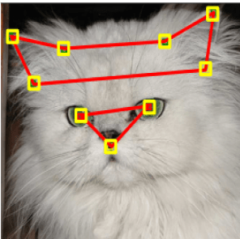
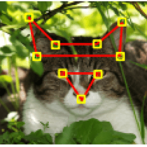
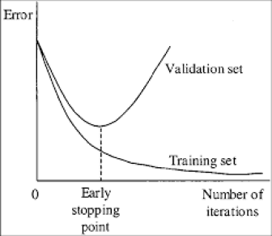

Snap Cat
September 2017 to present

Have you ever wished that Snapchat would apply their filters on your cat? I know, me too. And I’m going to do something about it.
Snap Cat is a real-time cat face and facial features detection system. This project will be eventually deployed as a mobile app to apply real-time filters on your favorite cats, similar to Snapchat.
Before we start off, huge credits to Darknet, an open source neural network framework, which I used to implement Snap Cat. It’s amazing because it allows someone with no knowledge of machine learning to generate models capable of detecting objects at an outstanding accuracy.
Unfortunately, I have not finished building Snap Cat (I started 3 days ago, from the time of writing). However, I have reached my first major milestone, which is using Deep Learning to train object detection models for cat face and facial features, benchmarking performance, and producing some visual demos.
Here is a video demo of cat face and facial features detections:
How it works
The general workflow goes as follows, given image A:
- Detect cat face on A;
- If a face is detected, detect features within the face.
The idea behind this two-step process is that we limit the detection area for facial features to a small subset of the original image. This makes feature detection much easier to learn for our models and helps reduce error.
Performance
Currently, the accuracy of the cat face detector is at 97.5%, and the facial feature detector is at 99.7%. I am satisfied with the performance of the latter, but I am still working on improving the cat face detector.
Process
1. Gather the data
I did quite a bit of digging on Google to finally find a dataset suitable for my purposes. http://mmlab.ie.cuhk.edu.hk/ has 10,000 cat images where each cat head is manually labeled with 9 points, one for mouth, two for eyes, and six for ears, as demonstrated in the images below. This means that we can use these annotations to train our model to detect 3 main features of cat faces. We can also use this dataset to detect faces; we can calculate where the face is by doing some geometric calculations based on facial proportions.
  Image source2. Start training
I used Darknet as the framework to train my object detection models. All you have to do is modify your dataset to comform to a format required by the framework. This would involve generating bounding rectangles around the eyes, ears, mouths, and the faces from the points given. It can be easily done using OpenCV library.
Since we are dealing with images, we need a convolutional neural network. I decided to use YOLOv2, since they claimed that they were faster and more accurate than other convolutional neural networks out there such as SSD, AlexNet, and Faster R-CNN.
Also, we cannot use our entire dataset for training. We have to save a portion of it to see how our models perform when given images that they have not seen before. This will become clearer in the next step.
3. Select the best training iteration
Contrary to what you may think, more training does not necessarily mean that we get a better performance. If you train for too long, it will result in “overfitting”; which means that the model will only work well with the training dataset, and that it will perform worse on the images that it has never seen before. So, I identified the “early stopping point” of the training, a point where our model has the highest performance with unfamiliar images.
4. Build your application! (ongoing)
The only thing left to do is to build your application. This part can be challenging because you have to integrate your app with the Darknet framework, as well as other libraries such as OpenCV. So far, I have built an interim program written in C++ that helps visualize detections on images and videos. You can check it out at my Github repository.
Next Steps
The next step would be to deploy a mobile app. This is the most challenging part because although convolutional neural networks run blazingly fast on GPU’s, mobile devices have far less computing resources available. However, I can think of a few solutions to this problem:
- Change the precision of weights from floating point to integer 8-bit, which speeds up CPU computation on embedded devices;
- Use advanced cache organization to speed up data access;
- Perform object tracking in between intervals of detections, which is less computationally expensive.